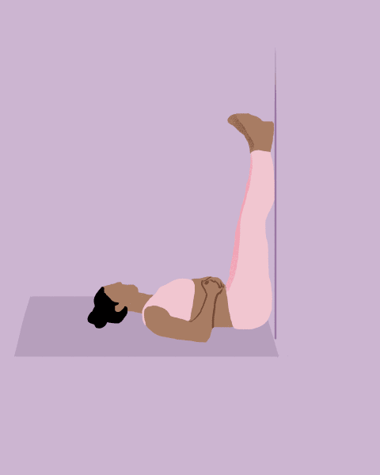

Lower Back Pain:
Yoga Asana: Cat-Cow Pose (Marjaryasana-Bitilasana)
Cat-Cow Pose is a gentle flow between two poses that helps to increase flexibility and mobility in the spine. It stretches the muscles of the back, hips, and abdomen, relieving tension and discomfort in the lower back. Regular practice of Cat-Cow Pose can improve spinal health and alleviate lower back pain.

Anxiety and Stress:
Yoga Asana: Child's Pose (Balasana)
Child's Pose is a deeply relaxing posture that promotes a sense of calm and tranquility. By gently stretching the spine, hips, and thighs while surrendering to gravity, Child's Pose helps to release tension and anxiety stored in the body. Practicing this pose regularly can soothe the nervous system, quiet the mind, and reduce feelings of stress and overwhelm.

Insomnia:
Yoga Asana: Legs-Up-the-Wall Pose (Viparita Karani)
Description: Legs-Up-the-Wall Pose is a restorative inversion that promotes relaxation and encourages a peaceful mind. By elevating the legs above the heart, this pose facilitates venous drainage and increases blood flow to the brain, inducing a state of deep relaxation. Practicing Legs-Up-the-Wall Pose before bedtime can help calm the nervous system, relieve insomnia, and promote restful sleep.